We can add two or more vectors using the \(+\) operator \[ \boldsymbol{a} + \boldsymbol{b} \] which is known as the parallelogram rule.
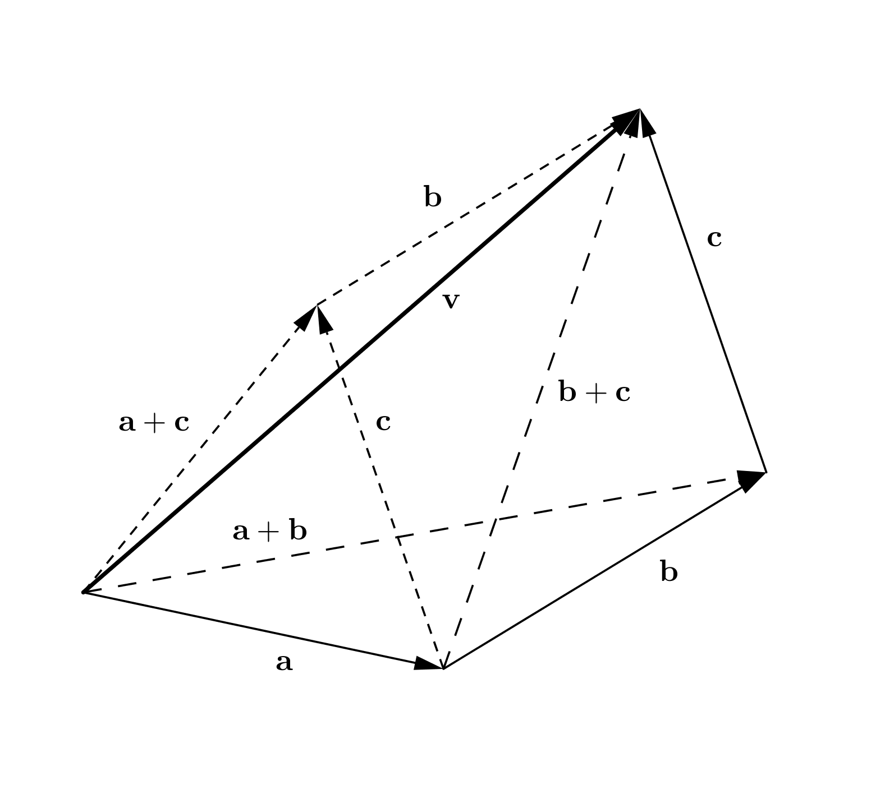
\[ \boldsymbol{a} - \boldsymbol{b} = \boldsymbol{a} + (-\boldsymbol{b}) \]
The Law of Sines reads \[ \frac{a}{\sin A} = \frac{b}{\sin B} =\frac{c}{\sin C} \]
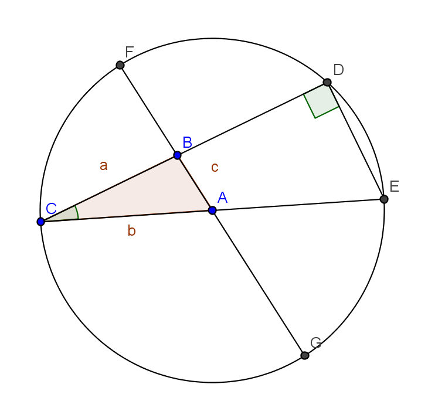
One of the major uses of this operation is to determine the projected length, \(u_{\parallel a}\), of a vector, \(\boldsymbol{u}\), along an axis, \(a-a\) in space.
Freehand depiction of the scene
Introducing a coordinate system \(O-x_1 x_2 x_3\), using the indices {1,2,3} to denote the first, second and third coordinate directions having a set of unit base vectors \(\boldsymbol{e}_1\), \(\boldsymbol{e}_2\), and \(\boldsymbol{e}_3\), respectively.
Freehand depiction of the scene
This can be used to obtain the well-known relation between the base vectors
A shorthand of the nine equations above is provided by introducing the free-indices \(i,j\) as
where \(i,j\) can freely take any values from the set of coordinate numbers \({1,2,3}\).
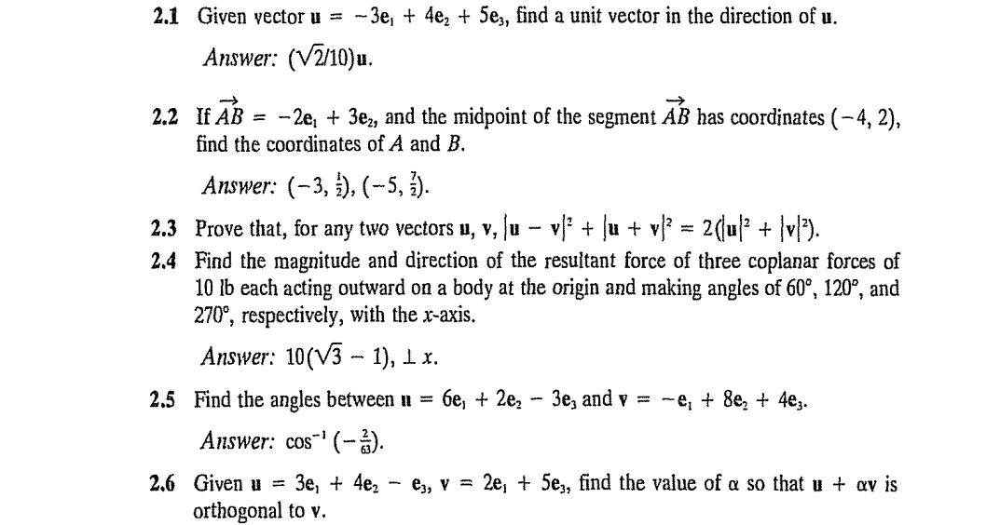
Whereas the scalar product of two vectors is a scalar quantity, the vector (or cross) product of two vectors \(\boldsymbol{u}\) and \(\boldsymbol{v}\) produces another vector \(\boldsymbol{w}\); and we write \(\boldsymbol{w} = \boldsymbol{u} \times \boldsymbol{v}\). The magnitude of \(\boldsymbol{w}\) is defined as \[ |\boldsymbol{w}| = |\boldsymbol{u}| |\boldsymbol{v}| \sin\theta \quad (0\leq\theta\leq\pi) \] where \(\theta=(\boldsymbol{u}, \boldsymbol{v})\), and the vector \(\boldsymbol{w}\) is directed perpendicular to the plane formed by \(\boldsymbol{u}\) and \(\boldsymbol{v}\), in such a way that \(\boldsymbol{u}\), \(\boldsymbol{v}\), \(\boldsymbol{w}\) form a right-handed screw.
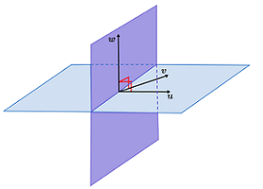
Vector products satisfy the following relations:
The vector product can be expressed in terms of the vector components in a coordinate system \(O-x_1 x_2 x_3\) as \[ \boldsymbol{u} \times \boldsymbol{v} = (u_1 \boldsymbol{e}_1 + u_2 \boldsymbol{e}_2 + u_3 \boldsymbol{e}_3) \times (v_1 \boldsymbol{e}_1 + v_2 \boldsymbol{e}_2 + v_3 \boldsymbol{e}_3) \]
It may be instructive to revisit the ideas of combinations and permutations
Ask GPT:
can you summarize the notions of combination and permutation in the context of set logic? can you demonstrate this definition by applying it to the notion of a determinant of a matrix, for example?
In this way, a novel apparatus called the alternating symbol was invented (by Levi-Civita) to give the sign of permuting triplets
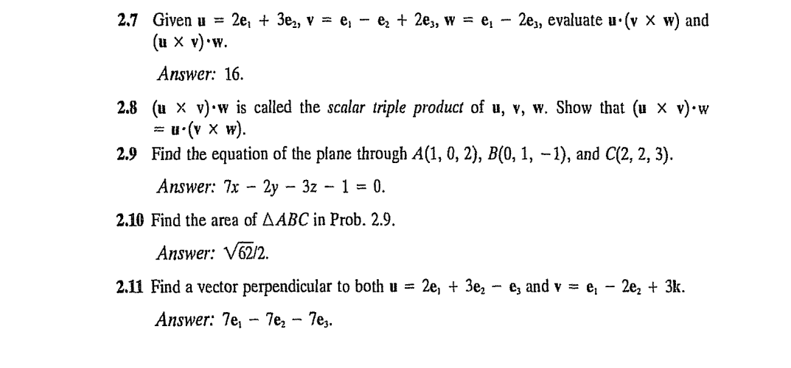
Or consider describing a plane with normal \(\boldsymbol{n}\) that is at a distance \(p\) from a point \(O\).
We can show that the position vector \(\boldsymbol{r}\) for any point \(P\) that starts from \(O\) and end up in this plane satisfies \(\boldsymbol{r} \cdot \boldsymbol{n} = p\).
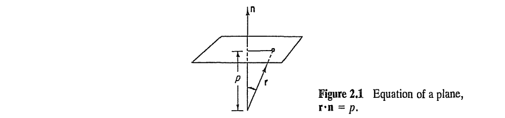
Consider the atmospheric current visualization provided by an app (such as https://windy.com)
The cylindrical coordinate system, for example, is defined by an axis of revolution, usually labeled with \(z\), an origin \(O\), and a fixed plane through the \(z\) axes used in measuring the angular orientations of points in space.
Freehand depiction of the scene
The orbital plane motion of a particle, \(P\), located at a fixed distance \(r\) away from an axis, \(z-z\), about which \(P\) rotates with an angular velocity, \(\omega\).
Freehand depiction of the scene
The velocity of \(P\) can then be determined by applying the cross product as
Similarly, an expression for the time derivative of the circumferential base vector can be obtained by using analogy with the above derivation
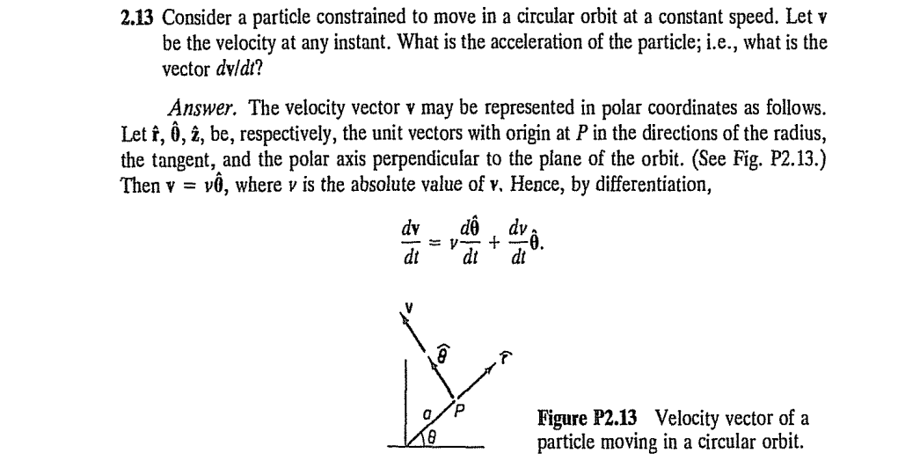
Inquire GPT about the use and history of the topic.
To whom is the summation convention attributed? What is it’s relation with the contraction operation with some background about the latter?
Let \(\boldsymbol{n}\) be a unit vector. It’s components can be evaluated by using the single equation in indicial notation \[ n_i = \boldsymbol{n} \cdot \boldsymbol{e}_i = \cos(\boldsymbol{n}, \boldsymbol{e}_i) \] where \((\boldsymbol{n}, \boldsymbol{e}_i) = \alpha_i\) are the angles that \(\boldsymbol{n}\) makes with each coordinate axis.
Freehand depiction of the scene
In terms of its component representation the same result can be achieved by taking the scalar product of the vector by itself, as
where the definition of the Kroenecker’s delta (\(\S 2.1\)) was used to convert the last line.
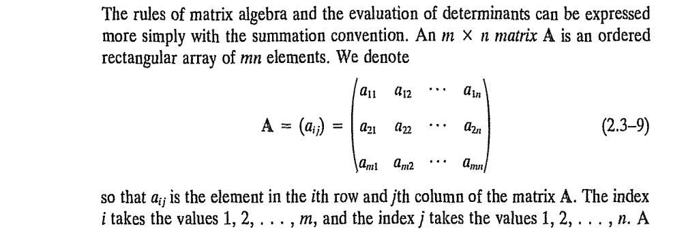
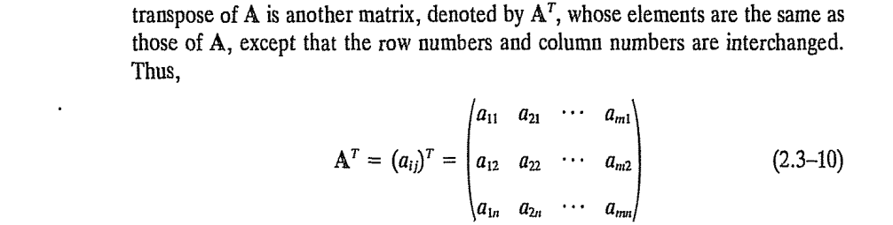
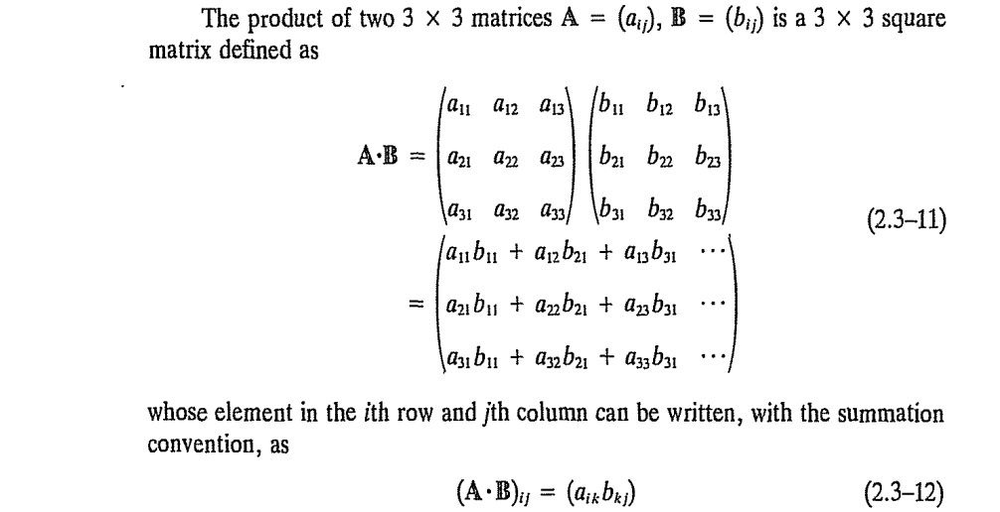
The determinant of a second order tensor is the difference between the sum of triple products of components from each row/column having cyclic permutation with the sum having a reverse cyclic permutation:
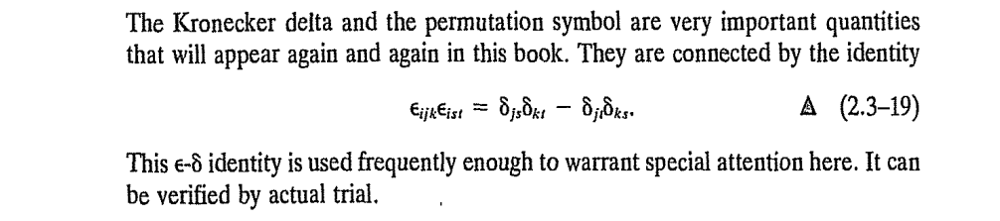
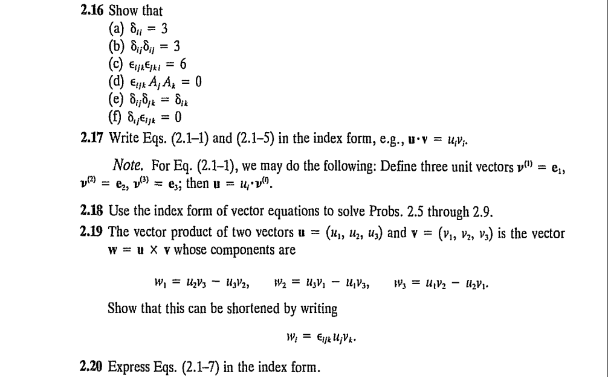
Problem 2.22
This section starts by considering two-dimensional frames of reference that are in
with respect to each other.
Consider two space-time frames of reference, \(Ox_1x_2,t\) and \(O'x_{1'}x_{2'},t'\) in a two-dimensional space. The goal is to record the geometry of motion of a body.
Freehand depiction of the scene
Let there be no translation of \(O'\) for the sake of clarity. The rotation of the current frame with respect to the initial is measured by the angle between the \(x_1\) and \(x_{1'}\) axes.
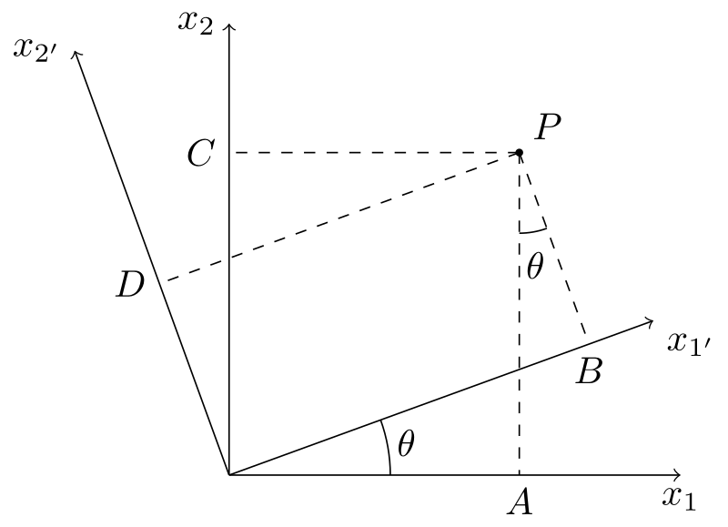
A careful investigation shows that the trigonometric functions of \(\theta\) in the matrix are equal to the cosines of the angles between pair of basis vectors.
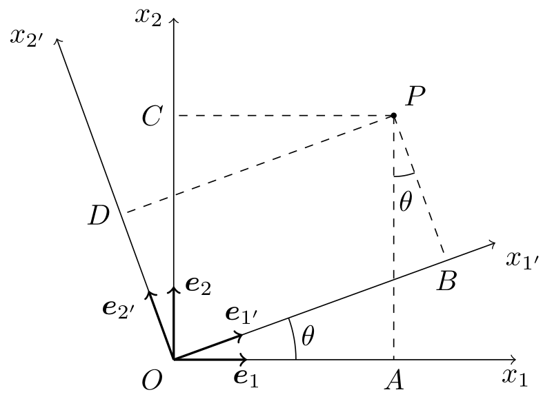
The other terms also reveal a similar pattern.
suggests a striking similarity with the last equation \(x_{i'} = \beta_{i'k} \beta_{j'k} x_{j'}\). We state that the coefficient of \(x_{j'}\) should be equal to a Kroenecker’s symbol for the above equation to be valid, i.e., \[ \beta_{i'k} \beta_{j'k} = \delta_{i'j'}. \]
The coordinate transformation relations that were derived for 2-D \[ x_{i'} = \beta_{i'j} x_j, \quad x_{j} = \beta_{i'j} x_{i'}, \quad i={1,2} \] are readily available and valid in 3-D as well! \[ x_{i'} = \beta_{i'j} x_j, \quad x_{j} = \beta_{i'j} x_{i'}, \quad i={1,2,3} \]
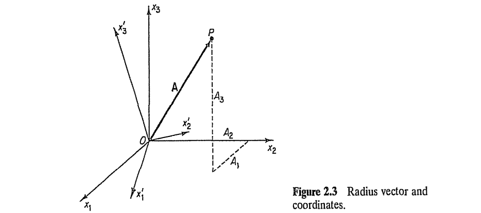